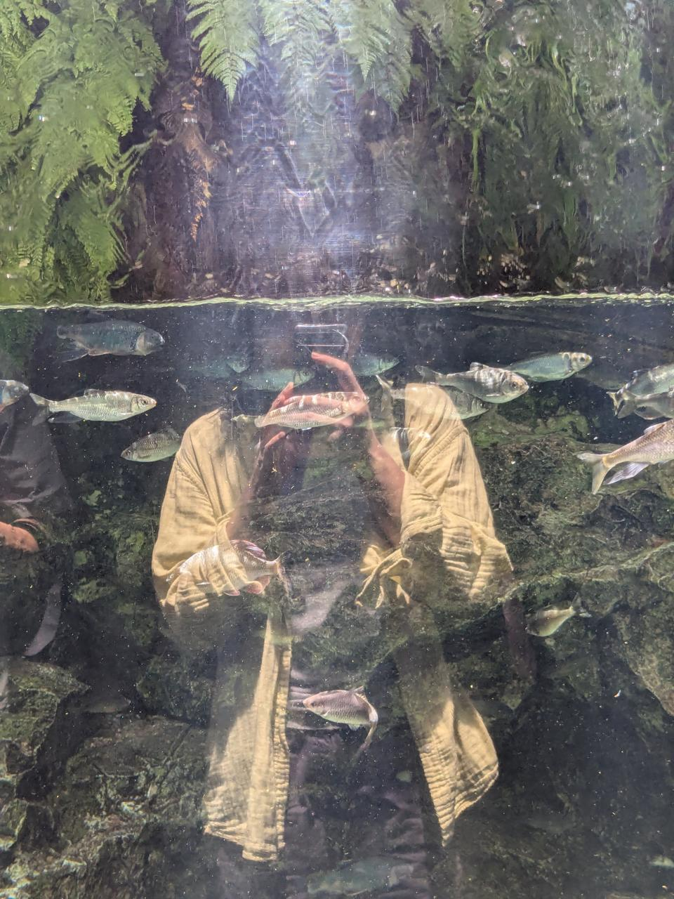
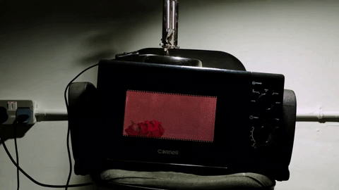
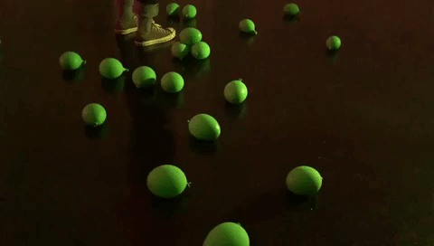

“Attention is the beginning of devotion.” (Mary Oliver)
Hi, I’m kyatos / Ang Kia Yee (she/her), a transdisciplinary life-form, arts worker, and probably an alien who believes in our capacity for compassion, rupture, agency, and change.
I devise speculative, mutative fictions which offer tethers to alternative worlds, bodily states, systems, and relationships. I see such work as forms of adaptive radiation and oracular intervention.
My work has spanned poetry, essays, short stories, plays, performances, audio walks, workshops, and video. It also encompasses counselling work and astrology readings.
In art and writing, I like to make work that is mysterious, atmospheric, temporally-layered, and unknowing. Playing across disciplines, forms, and media, I operate using the logic of poetry — what Carl Phillips describes as patterned language and the meaningful interruption of those patterns.
The fullness of life asks us to be here and now, and this is where I situate myself and my practice.



✶
I was a resident artist for the 2025 AiR Programme at The Godown Arts Centre, Kuala Lumpur and the 2024 Residency at the Intercultural Theatre Institute; a participating artist for Natasha, Singapore Biennale 2022; and a resident writer for Centre 42’s New Scripts Residency 2021. My writing has appeared in Stand Magazine, Quarterly Literary Review Singapore, SO-FAR, Plural Art Mag, and for exhibitions at Objectifs and Singapore Art Museum.
As a performance-maker, I co-/directed Descendants (2024-ongoing), an interdisciplinary reimagination of Descendants of the Eunuch Admiral by Kuo Pao Kun; Triumph of Our Tired Eyes (2018), an adaptation of Chekhov's Uncle Vanya; and Flicker (2015), a self-written script on loneliness and connection. I co-/created and performed in sentry (2018) as part of Festival of Audacity in Birmingham, UK; Saint Somebody (2019) at Camden People's Theatre, UK; Loving Things (2020-2021) as a performance video and live excerpt at the Esplanade Concourse, Singapore; and FUME (2022) by Pat Toh at 72-13, Singapore.
I recently founded a theatre collective called zone (境). I am the Co-Founder & was the Company Lead (2020-2024) of Feelers, a research lab of artists and designers focused on the intersections of art and technology. From 2015-2017, I co-founded and co-led theatre collective make/space.
✶ cv